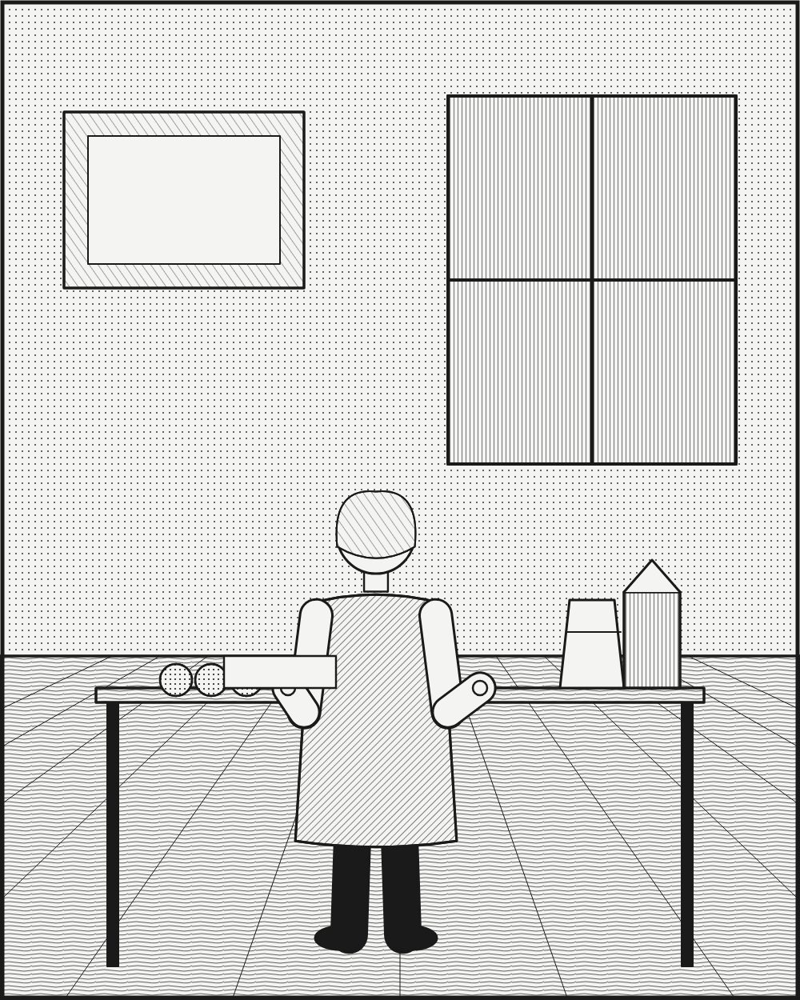

광고·마케팅 업계 뉴스 · 발행인 SM C&C 윤석진
우유가 없을 때의 낭패를 두 단어 질문으로 바꾼 사람

독자 여러분, 오늘은 냉장고 앞의 낭패감에서 광고를 길어 올린 사람을 소개합니다. 미국의 카피라이터 제프 구드비는 1983년 샌프란시스코에서 동료들과 광고회사 굿비 실버스타인 앤 파트너스를 세웠습니다. 그의 이름을 광고사에 새긴 작품은 1993년 캘리포니아 우유가공협회를 위해 만든 'Got Milk?' 캠페인입니다. 이 캠페인은 우유가 몸에 좋다고 설득하는 대신, 우유가 똑 떨어졌을 때의 아쉬움을 보여 주는 쪽을 택했습니다. 퍽퍽한 음식을 입에 문 채 우유를 찾는 사람들의 난감한 순간이 웃음이 됐고, 두 단어짜리 질문은 오랫동안 우유 광고의 상징처럼 쓰였습니다. 제품이 있을 때의 장점이 아니라 없을 때의 결핍을 그린 이 발상은 지금도 광고 수업에서 자주 꺼내는 사례입니다. 정보보다 상황을, 정답보다 질문을 건네는 그의 방식은 할 말이 많은 브랜드일수록 다시 볼 만합니다.